3. Wo wir heute stehen: eine Systemansicht
Peter Senge
3.1 Warum Systemdenken entscheidend ist
Vor 250 Jahren lebten weniger als eine Milliarde Menschen auf der Erde.
Damals müssen die Ressourcen der Erde – und ihre Widerstandsfähigkeit gegenüber unserem Bedarf – grenzenlos erschienen sein.
Daher sollte es nicht überraschen, dass die klassische Ökonomie – die aus dieser Zeit stammt – nicht die Tatsache berücksichtigte, dass wir in einer endlichen, ressourcenbeschränkten Welt leben. Dieser Glaube gab den Ton für die Art und Weise vor, wie wir seit Generationen Geschäfte machen: immer mehr Dinge produzieren, konsumieren und entsorgen, ohne die langfristigen Konsequenzen abzuwägen.
Mittlerweile gibt es 7,5 Milliarden Menschen auf der Erde, und bis 2050 werden voraussichtlich zwei Milliarden hinzukommen.
Industrialisierung und schnelles Wachstum forderten ihren Tribut. Die Ernteerträge leiden unter immer mehr extremen Wetterereignissen, angeheizt durch den Klimawandel. Süßwasser ist in vielen Gegenden knapp. Einige natürliche Ressourcen, die einst reichlich vorhanden waren, sind heute schwieriger und kostspieliger zu beschaffen. Das Vertrauen in Institutionen sinkt, während die Ungleichheit steigt. Angesichts des Ausmaßes dieser Krisen (Abbildung 3.1), kamen Regierungen der Welt im Jahr 2015 zusammen, um die UN-Ziele für nachhaltige Entwicklung (SDGs) ins Leben zu rufen: ein Aufruf zum Handeln für alle, vom Nationalstaat bis zum Unternehmen (Abbildung 3.2).
Unser Wirtschaftssystem ist kaputt.
Vereinfacht ausgedrückt ist unser Wirtschaftssystem nicht in der Lage, die Bedürfnisse von Hunderten Millionen Menschen auf der ganzen Welt zu erfüllen. Darüber hinaus beeinträchtigt die Art und Weise, wie wir Geschäfte machen, die Leistungen des Planeten, von denen wir als Spezies abhängig sind: saubere Luft, Süßwasser, reiche Artenvielfalt, Klimastabilität, Zugang zu Materialien und so weiter.
A systemisch Es ist eine Reaktion erforderlich.
Die sogenannte Triple Bottom Line [1] von People, Planet and Profit war noch nie so relevant. Aber wir müssen einen neuen Blick darauf werfen, was das wirklich bedeutet. Die globalen Herausforderungen, vor denen wir stehen, sind äußerst komplex und voneinander abhängig. Kurz gesagt, sie sind systemisch und um sie anzugehen, müssen wir einen systembasierten Ansatz wählen.
Abbildung 3.1: Dieser “Donut“ stellt den sicheren Handlungsraum für die Menschheit dar: eine soziale Grundlage des Wohlbefindens, die niemand unterschreiten sollte, und eine ökologische Obergrenze des Planetendrucks, die wir nicht überschreiten sollten. Quelle: Donut Economics. [2]
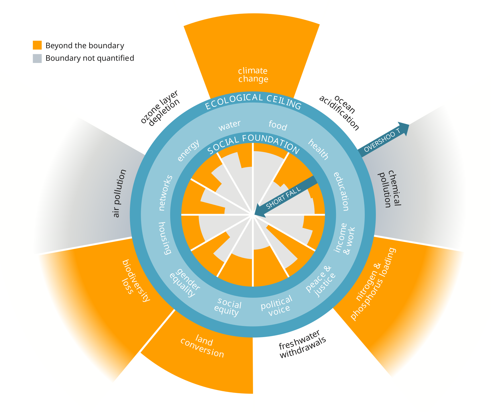
Wirtschaft kann nur gedeihen, wenn auch die Gesellschaft und die Natur gedeihen.
Unternehmen können nur in einer starken Gesellschaft gedeihen. Die Gesellschaft wiederum kann nur gedeihen, wenn ihre Bedürfnisse durch eine gesunde natürliche Umwelt befriedigt werden. Diese Beziehungen, die sich am besten als verschachtelte Abhängigkeiten beschreiben lassen, sind der Schlüssel zum Verständnis der Funktionsweise unserer globalen Wirtschaft.
Wir müssen diese systemischen Wechselwirkungen berücksichtigen, wenn wir genau erkennen wollen, wie und wie stark wir die Art und Weise, wie wir Geschäfte machen, ändern müssen. Nur dann können wir die SDGs erreichen und uns auf den Weg zu einer zukunftsfähigen Gesellschaft machen: einer Gesellschaft, die sozial gerecht, wirtschaftlich inklusiv und ökologisch wiederherstellend ist.
TDie vor uns liegende Aufgabe ist enorm.
Unser Wirtschaftssystem ist von Natur aus fehlerhaft und führt uns schnell in die falsche Richtung. Kein noch so großes Herumbasteln an den Rändern wird das beheben.
Stattdessen müssen wir alle Wirtschaftsakteure in die Lage versetzen und ermutigen, auf koordinierte Weise schnelle und radikale Veränderungen voranzutreiben. Und das erfordert ein grundlegendes Umdenken darüber, was es bedeutet, im 21 Jahrhundert Werte zu schaffen Hier fangen wir also an.
Abbildung 3.2: Die UN-Ziele für nachhaltige Entwicklung.s
| Sustainable Development Goal | |
|---|---|
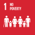 |
No Poverty End poverty in all its forms everywhere. |
| Zero Hunger End hunger, achieve food security and improved nutrition, and promote sustainable agriculture. |
|
 |
Good Health and Well-being Ensure healthy lives and promote well-being for all at all ages. |
| Quality Education Ensure inclusive and equitable quality education and promote lifelong learning opportunities for all. |
|
| Gender Equality Achieve gender equality and empower all women and girls. |
|
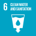 |
Clean Water and Sanitation Ensure availability and sustainable management of water and sanitation for all. |
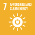 |
Affordable and Clean Energy Ensure access to affordable, reliable, sustainable and modern energy for all. |
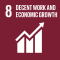 |
Decent Work and Economic Growth Promote sustained, inclusive and sustainable economic growth, full and productive employment and decent work for all. |
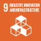 |
Industry, Innovation and Infrastructure Build resilient infrastructure, promote inclusive and sustainable industrialization, and foster innovation. |
 |
Reduced Inequalities Reduce inequality within and among countries. |
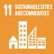 |
Sustainable Cities and Communities Make cities and human settlements inclusive, safe, resilient and sustainable. |
 |
Responsible Consumption and Production Ensure sustainable consumption and production patterns. |
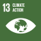 |
Climate Action Take urgent action to combat climate change and its impacts. |
 |
Life Below Water Conserve and sustainably use the oceans, seas and marine resources for sustainable development. |
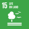 |
Life On Land Protect, restore and promote sustainable use of terrestrial ecosystems, sustainably manage forests, combat desertification, and halt and reverse land degradation and halt biodiversity loss. |
| Peace, Justice and Strong Institutions Promote peaceful and inclusive societies for sustainable development, provide access to justice for all and build effective, accountable and inclusive institutions at all levels. |
|
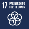 |
Partnerships for the Goals Strengthen the means of implementation and revitalize the global partnership for sustainable development. |
3.2 Eine systemische Sicht auf die Wertschöpfung
Wir alle wissen, dass wir handeln müssen.
Wenn die heutigen globalen Herausforderungen nicht kontrolliert werden, gefährden sie die natürlichen Prozesse der Erde, unser soziales Gefüge und die Wirtschaftstätigkeit insgesamt. Daraus ergibt sich ein enormer moralischer Imperativ für kollektives Handeln.
Immer mehr Führungskräfte wissen, dass sie umdenken müssen. Auch Anleger beginnen zu erkennen, dass ihre Portfolios Risiken ausgesetzt sind, die sie nur unzureichend vorhersagen können. Was hindert die Geschäftswelt also daran, ihre beträchtlichen Ressourcen zu mobilisieren, um schnelle und radikale Veränderungen herbeizuführen?
Es gibt keine einheitliche Antwort. CEOs und Vorstände fühlen sich oft gezwungen, sich auf kurzfristige Gewinne und nicht auf langfristige Werte zu konzentrieren. Vielen Anlegern fällt es schwer, über die Ergebnisse des nächsten Quartals hinauszublicken. Die Regierungen haben die Anreize und Vorschriften nur langsam angepasst, um auf globale Herausforderungen zu reagieren. Und da so viele ernste Probleme um die Aufmerksamkeit eines Unternehmens konkurrieren, kann es schwierig sein, sich auf das Wesentliche zu konzentrieren.
All diese Faktoren sind symptomatisch für ein größeres Problem in unserem Wirtschaftssystem: eine kurzsichtige Vorstellung davon, was Wertschöpfung bedeutet, die die wahren Game-Changer nicht erkennt und belohnt.
Soziale Unternehmensverantwortung führte nur zu inkrementellen Gewinnen.
Als das Bewusstsein für diese Tatsache wuchs, entstanden die Agenden zur Corporate Social Responsibility (CSR) und zur Nachhaltigkeitsberichterstattung, um Unternehmen für alle von ihnen verursachten negativen sozialen oder ökologischen Auswirkungen zur Rechenschaft zu ziehen.
Obwohl in einigen Teilen der Welt drastische Praktiken abgemildert wurden – etwa die Entsorgung von Giftmüll in Flüssen –, hat sich leider wenig grundlegend geändert. Bestenfalls hat sich der Drehknopf von ‘Business as Usual’ zu ‘Change as Usual’ verschoben.
Trotz der Bemühungen von Organisationen wie der Global Reporting Initiative [4], Keine zwei Unternehmen erläutern ihr soziales und ökologisches Engagement – und ihre Fortschritte bei der Umsetzung – auf die gleiche prägnante und vergleichbare Weise. Ohne den richtigen Maßstab zur Kalibrierung und zum Vergleich der Leistung kann selbst der bewussteste Investor oder Verbraucher nicht erkennen, welche Unternehmen am meisten tun, um die Gesellschaft in die richtige Richtung zu lenken.
Das Ergebnis ist, dass selbst in Sektoren, deren Geschäftsmodelle die globalen Probleme verschärfen, die meisten Unternehmen weiterhin ungefähr das tun, was sie immer getan haben, wenn auch danach streben, im Jahresvergleich etwas ‘weniger schlecht’ zu sein als ihre Mitbewerber. Aber das Ziel, weniger schlecht zu sein, ist einfach nicht gut genug.
Gemeinsamen Wert schaffen ‘Gutes tun’ als Chance neu definiert.
Vor einigen Jahren wurde der Begriff Creating Shared Value (CSV) geprägt [5], um zu beschreiben, wie Unternehmen sich weiterhin in erster Linie auf die finanzielle Leistung konzentrieren können, indem sie Wege finden, überall dort Geld zu verdienen, wo sich ihr Kerngeschäft und gesellschaftliche Probleme überschneiden.
Während CSR oft nur als ein weiterer Kostenfaktor für die Geschäftstätigkeit angesehen wurde, sieht CSV darin, ‘das Richtige zu tun’ eine Chance für Wachstum. Und so ist es natürlich eine Chance – wenn wir wissen, was „das Richtige tun“ wirklich bedeutet. Darin liegt die Herausforderung.
Heutige Unternehmen agieren in einer Welt komplexer, miteinander verbundener Systeme – Märkte, Gemeinschaften, Ökosysteme usw. –, in der lineare Vorstellungen von Ursache und Wirkung zu verschwinden beginnen. Jede Aktion in einem Bereich kann zu unerwünschten Folgen an anderer Stelle führen. Ein Unternehmen, das einen CSV-Ansatz verfolgt, könnte guten Gewissens versuchen, ein Problem zu lösen, nur um ein anderes zu schaffen. Sind solche Kompromisse akzeptabel? Möglicherweise, aber wie können wir sicher sein, wenn wir nicht wissen, was sie sind?
Um das volle Ausmaß der Auswirkungen eines Unternehmens – ob gut oder schlecht – zu verstehen, müssen wir in Begriffen denken Systemwert schaffen.
Keine Geschäftsentscheidung ist jemals frei von potenziellen Kompromissen. Ein systembasierter Ansatz ermöglicht es jedoch, ansonsten unvorhergesehene Probleme zu erkennen. Dadurch können negative Kompromisse vorhergesehen, vermieden oder zumindest angegangen werden.
Diese Art der ganzheitlichen Entscheidungsfindung muss zur Norm werden, wenn wir Schäden an unseren natürlichen Systemen und unserem sozialen Gefüge verhindern und schließlich rückgängig machen wollen. Das verstehen wir unter Systemwert schaffen (Abbildung 3.3).
Der Future-Fit Business Benchmark wurde speziell entwickelt, um Unternehmen bei der Umsetzung dieses Konzepts zu unterstützen. Der erste Schritt dieser Entwicklung bestand darin, die Systemkontexte zu untersuchen, die das heutige Geschäft prägen.
Abbildung 3.3: Überdenken der Wertschöpfung aus der Systemperspektive.
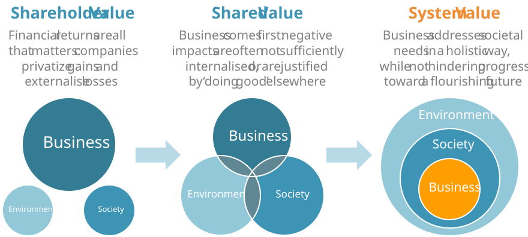
3.3 Eine systemische Sicht auf die Welt
Was ist ein System?
Ein System kann als eine Reihe miteinander verbundener und voneinander abhängiger Teile definiert werden, die gemeinsam einen gemeinsamen Zweck verfolgen. [6]
Der Zweck eines Systems ist möglicherweise nicht immer offensichtlich. Was ein System tatsächlich tut, ist möglicherweise nicht das, was ursprünglich beabsichtigt war oder von dem angenommen wird, dass es funktioniert. Um jegliche Verwirrung hinsichtlich der Unterschiede zwischen tatsächlichem und beabsichtigtem Verhalten zu vermeiden, formulieren Systemwissenschaftler den Zweck eines Systems daher normalerweise einfach als „was es tut“. [7]
Der Zweck eines Systems ist möglicherweise nicht immer offensichtlich. Was ein System tatsächlich tut, ist möglicherweise nicht das, was ursprünglich beabsichtigt war oder von dem angenommen wird, dass es funktioniert. Um jegliche Verwirrung hinsichtlich der Unterschiede zwischen tatsächlichem und beabsichtigtem Verhalten zu vermeiden, formulieren Systemwissenschaftler den Zweck eines Systems daher normalerweise einfach als “was es tut”. [7]
Wie funktionieren Systeme?
Jedes System operiert in einem breiteren Kontext, da seine Existenz von anderen Systemen in seiner Umgebung abhängt und diese auch beeinflussen kann.
Um seinen Zweck zu erfüllen, wandelt ein System eine oder mehrere Eingaben in Ausgaben um. Um zu verstehen, wie dies geschieht, können wir uns ein System in Form von vier Ebenen vorstellen, von denen jede die nächste beeinflusst:1
- Treiber: Kräfte auf das System, die sich aus dem breiteren Kontext ergeben und sowohl beeinflussen, was es tun kann, als auch zusammenwirken, um seinen Zweck zu formen.
- Struktur: Die physischen Teile des Systems und wie sie organisiert sind, damit sie die Aufgaben ausführen können Prozesse benötigt, um Inputs zu erfassen und diese in Outputs umzuwandeln.
- Verhaltensmuster: Wie sich das System im Laufe der Zeit verhält. Solche Muster kommen häufig vor auftauchend: Sie resultieren aus der Interaktion der Teile des Systems und können daher nicht durch isolierte Beobachtung jedes Teils vorhergesagt werden.
- Ergebnisse: Die Veränderungen – sowohl am System selbst als auch an anderen umliegenden Systemen – die sich aus seiner Existenz ergeben. Dazu gehören die (beabsichtigten und sonstigen) Auswirkungen des Konsums von Inputs und der Produktion von Outputs.
Diese vier Systemebenen werden oft als aufeinanderfolgende Schichten eines Eisbergs dargestellt, mit den Treibern am unteren Ende. Das liegt daran, dass in realen Systemen oft nur die oberste Ebene – die Ergebnisse – gut sichtbar ist (siehe Abbildung 3.4).
Wir werden später auf dieses Modell zurückkommen, um uns dabei zu helfen, einen umfassenden Satz wünschenswerter und messbarer Ergebnisse zu ermitteln, die eine zukunftsfähige Gesellschaft liefern wird.
Abbildung 3.4: Das Eisbergsystemmodell.
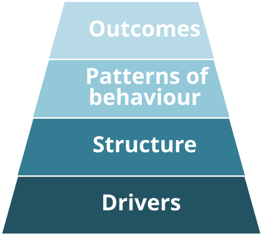
Aber zunächst müssen wir die Welt als ein miteinander verbundenes Netzwerk von Systemen betrachten.
Was sind natürliche Systeme?
Ein natürliches System ist ein System, das in der Natur existiert, unabhängig von jeglicher Beteiligung des Menschen. [8] Auf der höchsten Ebene besteht die Erde aus vier voneinander abhängigen natürlichen Systemen: der Atmosphäre, der Lithosphäre, der Hydrosphäre und der Biosphäre. [9]
Die Biosphäre – die alle lebende Materie umfasst – kann weiter als eine riesige und vielfältige Palette von Ökosystemen beschrieben werden. Alle lebenden Organismen sind selbst Systeme. Der Einfachheit halber bezeichnen wir dieses Netz natürlicher Systeme von nun an oft als die Umwelt.
Was sind soziale Systeme?
Ein soziales System ist ein strukturiertes Netzwerk von Wechselbeziehungen zwischen einzelnen Menschen, Gruppen und Institutionen, das ein zusammenhängendes Ganzes bildet. [10]
Die Gesellschaft als Ganzes ist ein vielschichtiges Netzwerk voneinander abhängiger sozialer Systeme (sehen Abbildung 3.5). Wenn wir über große Aspekte der Gesellschaft sprechen, verwenden wir tatsächlich oft explizit den Begriff ‘System’: Rechtssystem, Verkehrssystem, globales Wirtschaftssystem und so weiter.
Auf einer granulareren Ebene reichen die sozialen Systeme von Städten und Haushalten bis hin zu Universitäten und – natürlich – Unternehmen.
Was ein soziales System tut – und damit die Ergebnisse, die es liefern möchte – hängt von seiner Rolle in der Gesellschaft ab. Eine effektive Regierung stellt ihren Bürgern beispielsweise Dienstleistungen zur Verfügung, indem sie kritische Infrastrukturen wie Bildung und Gesundheitsversorgung aufrechterhält. Ein Unternehmen produziert Waren und Dienstleistungen, deren Verkauf seinen Eigentümern finanzielle Erträge bringt, seinen Mitarbeitern eine Einkommensquelle bietet und die weitere Entwicklung des Unternehmens unterstützt. Ein angestrebtes Ergebnis einer Schule sind gebildete Individuen, von denen jeder in der Lage ist, sein Wissen anzuwenden, um zu den Aktivitäten anderer sozialer Systeme beizutragen.
Die Gesellschaft kann nur dann zukunftsfit sein, wenn jedes soziale System zukunftsfit ist.
Jedes soziale System hängt von vielen anderen ab und kann diese beeinflussen – und jedes muss seinen Teil zum Übergang der Gesellschaft zur Zukunftsfähigkeit beitragen. Aber was genau bedeutet das? Wie muss sich ein einzelnes soziales System verhalten, wenn wir einen gemeinsamen Weg in eine sozial gerechte, wirtschaftlich integrative und ökologisch wiederherstellende Zukunft einschlagen wollen?
Um dies zu beantworten, müssen wir die drei Schlüsselkontexte untersuchen, in denen alle sozialen Systeme agieren: den ökologischen, den gesellschaftlichen und den wirtschaftlichen Kontext.
Abbildung 3.5: Die Gesellschaft ist ein vielschichtiges Netzwerk voneinander abhängiger sozialer Systeme, die alle vollständig von einer gesunden Umwelt abhängig sind.
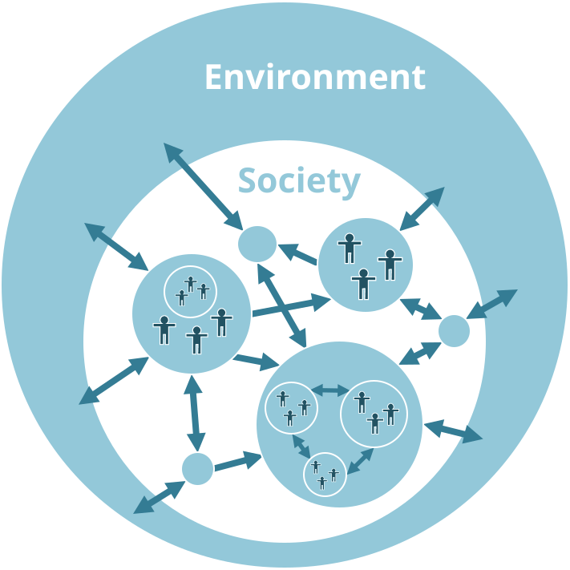
3.4 3.4 Der Umweltkontext
Die Erde erfüllt drei wichtige Ökosystemfunktionen für die Gesellschaft.
Erstens unterhält die Erde wichtige Lebenserhaltungssysteme.
Alles Leben beruht auf natürlichen Prozessen, die sich über Millionen von Jahren entwickelt haben. Diese Prozesse regulieren unter anderem die Luft- und Wasserqualität sowie das Klima, ermöglichen das Wachstum von Nutzpflanzen, sorgen für Sturmschutz und erhalten die Artenvielfalt.
Zweitens liefert die Erde unsere Rohstoffe und Energie.
Abgesehen von unserem „Solareinkommen“ (Energie aus Sonnenlicht) stammen alle unsere Ressourcen von der Erde. Viele natürliche Ressourcen wie Fische und Bäume erneuern sich im Laufe der Zeit dank der oben genannten Lebenserhaltungssysteme. Wenn wir jedoch zu viel und zu schnell verbrauchen (z.B. Abholzung, Überfischung), untergraben wir die Fähigkeit der Natur, sie zu regenerieren.
Aus der Erdkruste gewonnene Mineralien sind endliche Ressourcen. Einmal genutzt, sind einige davon endgültig verschwunden (z.B. fossile Brennstoffe). Andere (z. B. Metalle) könnten theoretisch für immer in Gebrauch bleiben, wenn wir sie nach der Verwendung zurückgewinnen.
Drittens nimmt die Erde Abfall auf.
Abfall ist eine einzigartige Eigenschaft menschlicher Systeme: In der Natur wird alle Materie (abgestorbene Pflanzen, Tiere) von anderen Organismen aufgenommen und verdaut.
Zwei Arten von Abfällen verursachen große Probleme. Bei der ersten Art handelt es sich um vom Menschen hergestellte Substanzen, die in der Natur nicht vorkommen, sodass die Natur keine Methoden entwickelt hat, sie harmlos abzubauen (z.B. Kunststoffe, FCKW). Die zweite Art umfasst Stoffe, die zwar in der Natur vorkommen, die wir aber in Mengen oder auf eine Weise ausstoßen, die das natürliche Gleichgewicht stören (z. B. Kohlendioxid in der Luft, Stickstoffverbindungen in den Ozeanen).
Beide Arten von Abfällen können die Umwelt chemisch oder physikalisch beeinträchtigen, indem sie beispielsweise Giftstoffe in die Nahrungsketten einschleusen oder Wärme in der Atmosphäre speichern. Dadurch stören sie die Lebenserhaltungssysteme, auf die wir angewiesen sind.
Soziale Systeme in diesem Zusammenhang.
Die heutigen sozialen Systeme wirken sich tiefgreifend auf alle drei Ökosystemfunktionen aus.
Kein soziales System kann ohne Energie, Süßwasser und eine breite Palette von Gütern aus natürlichen Ressourcen überleben, die alle abgebaut, bewirtschaftet oder in der Wildnis geerntet werden müssen. Solche Ressourcen werden auf vielfältige Weise gewonnen und umgewandelt, doch fast alle Wertschöpfungsketten folgen einem linearen Take-Make-Waste Ansatz. Bei jedem Schritt unserer Produktions- und Verbrauchsmethoden entstehen in der Regel unbeabsichtigte Nebenprodukte, die aufgefangen und als Abfall behandelt werden oder als Verschmutzung in die Natur gelangen. So oder so geht der eigentliche Wert der ursprünglichen natürlichen Ressourcen für die Gesellschaft verloren.
Alle sozialen Systeme haben auch eine physische Präsenz, von Feldern und Gebäuden bis hin zu einer breiten Palette unterstützender physischer Infrastruktur. Und unser wachsender Platzbedarf setzt die Natur immer mehr unter Druck und schränkt ihre Fähigkeit ein, unsere Bedürfnisse zu erfüllen.
Achtung: Naturkapital
Planetenressourcen, von denen wir profitieren, werden manchmal als Naturkapital bezeichnet. Diese Terminologie kann zu der falschen Schlussfolgerung führen, dass wir die Leistungen der Natur durch andere Arten von Kapital (z. B. Finanzkapital oder Industriekapital) ersetzen können. Doch viele natürliche Ressourcen – saubere Luft, fruchtbarer Boden – sind lebenswichtig und durch keinen Ersatz möglich. Allerdings kann der Begriff Naturkapital nützlich sein, wenn wir unter Kapital einen Vermögenswert verstehen, der in der Lage ist, Wohlstand zu schaffen. Wir dürfen das Naturkapital nicht erschöpfen, aber wir können von seinen Zinsen leben.
3.5 Der gesellschaftliche Kontext
Inklusivität, Belastbarkeit und Vertrauen sind entscheidend für den Erfolg der Gesellschaft.
Jeder soll die Fähigkeit und Möglichkeit haben, ein erfülltes Leben zu führen.2
Angesichts der Tatsache, dass Milliarden Menschen in irgendeiner Form in Armut leben, sollte klar sein, dass unsere Wirtschaft ihren Zweck nicht erfüllt.
Die Fähigkeit eines jeden sozialen Systems, bis hin zur Gesellschaft als Ganzes, zu gedeihen, hängt in hohem Maße vom Wohlergehen der Menschen ab, die dazu beitragen. Das bedeutet nicht, dass die Menschen immer glücklich sein müssen. Vielmehr bedeutet es, dass jeder in der Lage sein sollte, seine Grundbedürfnisse (z. B. Nahrung, Unterkunft) zu befriedigen und höhere Bedürfnisse (z. B. Sinn für Sinn, Kreativität) zu verfolgen.3
Beide Aspekte sind wesentlich. Wenn man sich nur auf die Grundbedürfnisse konzentriert, kann man zwar überleben, aber nicht gedeihen und wachsen. Ebenso können Menschen nur dann höheren Bedürfnissen nachgehen, wenn ihre Grundbedürfnisse befriedigt werden.
Um Grundbedürfnisse zu befriedigen und höhere Bedürfnisse zu erfüllen, benötigen Menschen drei Dinge:
- Der körperliche Leistungsfähigkeit um dies zu tun (einschließlich körperlicher/geistiger Gesundheit);
- Der geistige Leistungsfähigkeit um dies zu tun (einschließlich relevanter Fähigkeiten und Kompetenzen);
- Der Gelegenheit um dies zu erreichen (durch soziale Gerechtigkeit, wirtschaftliche Inklusion und vertrauensvolle Beziehungen).
Einige Grundbedürfnisse sind für das Wohlergehen der Menschen so entscheidend, dass der Zugang zu ihnen als grundlegendes Menschenrecht angesehen wird (siehe Abbildung 3.6). [2] [13]
Wir sind eine soziale Spezies.
Einige höhere Bedürfnisse – wie Zuneigung und Teilhabe – können nur im Verbund mit anderen befriedigt werden. Die Gesellschaft zeichnet sich nicht nur durch ihre einzelnen Mitglieder aus, sondern auch durch die Art und Weise, wie wir uns in sozialen Systemen organisieren und wie sie miteinander interagieren.
Abbildung 3.6: “Grundbedürfnisse” beziehen sich auf die Bedürfnisse aller Menschen.
|
People’s basic needs (Derived from the SDGs. Source: Doughnut Economics.) |
|---|
| Sufficient (nutritious) food |
| Clean water and sanitation |
| Energy and cooking facilities |
| Decent housing |
| Education |
| Healthcare |
| Networks of communication |
| Networks of social support |
| Sufficient income to meet the above needs |
Dies ist das soziale Gefüge, auf das wir alle angewiesen sind: Die Gesellschaft ist nur so stark wie die Beziehungen zwischen ihren Bestandteilen. Wenn sich unser soziales Gefüge verschlechtert, verschlechtert sich auch unsere Fähigkeit, zu gedeihen.
Die Qualität und Widerstandsfähigkeit unseres sozialen Gefüges ist von entscheidender Bedeutung.
Wie vermeiden wir also eine Verschlechterung unseres sozialen Gefüges? Führende Wissenschaft [14] sagt uns, dass die Gesundheit der Gesellschaft von mehreren Faktoren abhängt. Vielfalt und Lernen sind entscheidend für die Resilienz (die Fähigkeit, sich an neue Umstände anzupassen und Krisen zu überstehen), ebenso wie die Fähigkeit zur Selbstorganisation. Auch gemeinsame Bedeutungen und Werte sind von entscheidender Bedeutung. Alle diese Faktoren sind entscheidend, aber ein weiterer scheint sie alle zu untermauern: Vertrauen.
Vertrauen dient als Klebstoff der Gesellschaft.
Vertrauen wird mit einem geringen Maß an Korruption, demokratischer Stabilität und relativer wirtschaftlicher Gleichheit in Verbindung gebracht. Größere Gleichheit korreliert mit einer Verringerung vieler gesellschaftlicher Missstände (z. B. Selbstmord, Drogenmissbrauch, Fettleibigkeit, Gewalt). [15]
Die Gesellschaft ist riesig und komplex. Vertrauen ist wichtig, denn nur durch koordiniertes Handeln und die Übertragung von Verantwortung funktioniert alles. Aber es gibt keine Abkürzung zum Vertrauen: Um es zu erlangen, muss man zunächst als vertrauenswürdig wahrgenommen werden.
Soziale Systeme in diesem Zusammenhang.
Vertrauenswürdigkeit entsteht nur mit der Zeit, wenn Menschen konsequent tun, was sie sagen, und sich bemühen, im besten Interesse anderer zu handeln. Das bedeutet, dass jedes soziale System einen fairen Beitrag zur gemeinsamen Infrastruktur leisten, das Wohlergehen seiner Teilnehmer und anderer Interessengruppen fördern und offen über das Ausmaß seiner negativen Auswirkungen sein muss – und über seine Ambitionen, diese im Laufe der Zeit zu verbessern.
3.6 Der wirtschaftliche Kontext
Was kann uns ein Systemansatz über Wachstum’ und ‘Wert’ sagen?
Kann – und sollte – das Wirtschaftswachstum anhalten?
Fragen Sie Politiker, Investoren oder CEOs, ob das Wachstum ‘gut’ ist, und ihr Ja wird wahrscheinlich so nachdrücklich ausfallen, wie es vielleicht niemand von besorgten Umweltschützern hören würde.
Der Grund für eine solche Polarisierung liegt nicht darin, dass einem Befragten die Gesellschaft am Herzen liegt und dem anderen nicht, sondern vielmehr darin, dass sie unterschiedliche Ansichten darüber haben, was Wachstum tatsächlich bedeutet. Um diese Perspektiven in Einklang zu bringen, müssen wir das Wachstum durch eine Systemlinse betrachten.
Es gibt vier Arten von Wirtschaftswachstum.
Aus systemischer Sicht gibt es vier Arten von Wirtschaftswachstum: [16]
- Typ 1 – Wachstum des biophysikalischen Durchsatzes: Dabei handelt es sich um die Menge an Rohstoffen, die wir der Umwelt entziehen (und an Abfällen, die wir wieder in sie einbringen). Auf einer endlichen Welt ist ein unbegrenztes Wachstum dieser Art nicht möglich.
- Typ 2 – Wachstum in Produktion und Verbrauch: Dies ist die Menge an Gütern und Dienstleistungen, die durch die Gesellschaft fließen, was in etwa dem Bruttoinlandsprodukt (BIP) entspricht. Diese Art von Wachstum ist nicht der Fall an sich schlecht. Wenn beispielsweise die Bevölkerung wächst, müssen mehr Lebensmittel produziert und konsumiert werden.
- Typ 3 – Wachstum des wirtschaftlichen Wohlstands: Dies stellt die Fähigkeit und Chance der Menschen dar, ein erfülltes Leben zu führen – und insbesondere den Grad, in dem ihre Grundbedürfnisse befriedigt werden (Abbildung 3.6). Es besteht ein enger Zusammenhang zwischen dieser Wachstumsart und Typ 2 – aber dieser ist nicht einfach.
- Typ 4 – Wachstum der natürlichen Ressourcen: Hierbei geht es um die Menge an Biomasse (Fisch, Holz usw.), die sich durch natürliche Prozesse wie Photosynthese regeneriert, und um die Gesundheit der Ökosystemfunktionen (Süßwasser, fruchtbarer Boden usw.), die diese Regeneration ermöglichen. Diese Art des Wachstums erhöht die für unseren Verbrauch verfügbaren Rohstoffe und bereichert die natürlichen Systeme, auf die wir angewiesen sind.
Wachstum der Typen 3 und 4 ist eindeutig ‘gut’, da es direkt zur Lösung vieler der zuvor genannten globalen Herausforderungen beitragen kann, von sozialer Ungleichheit bis hin zur Ernährungssicherheit. Angesichts der Tatsache, dass wir viel zu große Anforderungen an die natürlichen Systeme der Erde stellen, ist Wachstum vom Typ 1 ein Problem. (siehe Abbildung 3.7).
Was Typ 2 betrifft, kann ein Produktionswachstum die Lage verschlimmern (z. B. durch Zerstörung des Ökosystems), und ein übermäßiger Konsum kann ebenso problematisch sein (z.B. wenn Einwegprodukte zu großen Mengen nicht wiederverwertbaren Abfalls führen).
Unser Streben nach Wachstum ist fehlerhaft.
Heutzutage konzentriert sich die Weltwirtschaft fast ausschließlich auf Wachstum, Produktion und Konsum vom Typ 2, unabhängig davon, wie (und wie stark) sie mit den anderen drei Typen verknüpft sind. Warum? Weil Geld den Besitzer wechselt, wenn Waren und Dienstleistungen gekauft und verkauft werden – und unser Wirtschaftssystem sich so entwickelt hat, dass es finanzielle Erträge und Wertschöpfung als ein und dasselbe behandelt.
Abbildung 3.7: Aus systemischer Sicht gibt es vier Arten von Wirtschaftswachstum.
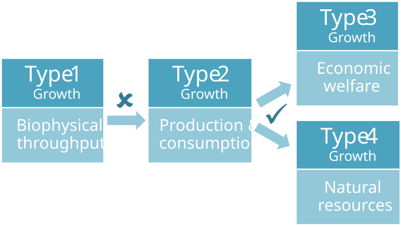
Um zu verstehen, warum, können wir das zuvor eingeführte Eisbergmodell verwenden (siehe Abbildung 3.4). Das Streben nach BIP ist ein zentraler Motor unserer Wirtschaft, da jede große Nation der Erde seit kurz nach dem Zweiten Weltkrieg versucht hat, diese Kennzahl zu maximieren. [17] Dies hat die Strukturen und Verhaltensmuster geprägt, die soziale Systeme heute aufweisen.
Dies manifestiert sich unter anderem darin, wie viel Mühe Zentralbanken und Regierungen darauf verwenden, „die Wirtschaft wachsen“ zu lassen, indem sie die Zinssätze und andere ihnen zur Verfügung stehende Faktoren anpassen und ständig versuchen, die Kreditaufnahme- und Ausgabemuster anzupassen, um ein nie endendes Wachstum anzustreben. Ein weiterer Grund besteht darin, dass Unternehmen nach dem günstigsten und rechtlich akzeptablen Weg suchen, um etwas zu erledigen. Wenn dieser Weg dazu führt, dass Abfall entsteht, Rohstoffe übermäßig geerntet werden, kreative Ansätze zur Steuereinsparung eingesetzt werden oder Arbeit in Regionen mit weniger fortschrittlichen Arbeitsnormen verlagert wird, dann sei das so.
Solche negativen Auswirkungen entstehen nicht, weil die Menschen, die die Entscheidungen treffen, blind gegenüber sozialen und ökologischen Belangen sind, sondern weil der wirtschaftliche Kontext, in dem sie tätig sind, nicht ausreichend zu den richtigen Ergebnissen führt.
Soziale Systeme in diesem Zusammenhang.
Zahlreiche Unternehmen, Städte und andere gehen mit gutem Beispiel voran, um Triple-Bottom-Line-Ergebnisse zu erzielen, aber ihre Erfolge werden oft trotz des Systems und nicht dadurch erzielt. Initiativen, die eindeutige ökologische oder soziale Vorteile bringen, werden oft nur dann vollständig angenommen, wenn sie auch klare finanzielle Vorteile bringen. Die Treiber eines Systems beeinflussen alles, was es tut und wie es es tut. Solange unser Wirtschaftssystem ausschließlich auf das BIP (und damit Wachstum vom Typ 2) abzielt, werden restaurative Ergebnisse eher die Ausnahme als die Norm bleiben. Wachstum vom Typ 2 ist nur dann wünschenswert, wenn wir Wege finden können, es vom Typ 1 zu entkoppeln, und sofern es zum Wachstum von Typ 3 oder 4 beiträgt – indem es den Wohlstand steigert oder natürliche Systeme regeneriert.
Das bedeutet „gutes Wachstum“, und wir müssen unser Wirtschaftssystem neu ausrichten, um es anzuerkennen und zu belohnen. Es gibt keinen magischen Knopf, den wir drücken können, um dies zu ermöglichen, aber im Laufe der Zeit kann ein neues Wachstumsparadigma entstehen, wenn soziale Systeme zusammenarbeiten – um soziale Normen, globale Governance, gemeinsame Infrastruktur und Marktmechanismen zu transformieren – so dass „das Richtige getan“ wird „ wird zum Weg des geringsten Widerstands – und der größten Belohnung – für alle Wirtschaftsakteure.
3.7 Wir überdenken unseren Platz in der Welt
Wir müssen degenerative Ergebnisse in regenerative umwandeln.
Jedes Gesellschaftssystem muss seinen Teil zum bevorstehenden Übergang beitragen.
Wir haben gesehen, dass die Gesellschaft ein riesiges und miteinander verbundenes Netz sozialer Systeme ist. Heutzutage tragen die Aktivitäten dieser sozialen Systeme zu einer Reihe degenerativer Folgen bei: solche, die die Integrität der natürlichen Welt und des sozialen Gefüges, auf das wir angewiesen sind, systematisch untergraben. Wenn wir einen gemeinsamen Weg zum Erfolg einschlagen wollen, müssen wir diese degenerativen Folgen in regenerative umwandeln.
Zusammenfassung dessen, was wir über die ökologischen, gesellschaftlichen und wirtschaftlichen Zusammenhänge gelernt haben, Abbildung 3.8 bietet eine Möglichkeit, die Aktivitäten jedes sozialen Systems anhand von acht Schwerpunktbereichen zu charakterisieren. Jeder Einfluss, den ein soziales System auf die Welt haben kann – absichtlich oder unabsichtlich, positiv oder negativ – fällt in einen dieser Bereiche.
Im nächsten Kapitel ermitteln wir, wie ein angemessenes regeneratives Ergebnis für jeden dieser Bereiche aussieht, um die Eigenschaften einer zukunftsfähigen Gesellschaft zu definieren.
Abbildung 3.8: Diese acht Schwerpunktbereiche umfassen, wie jedes soziale System die Welt um es herum beeinflussen kann.
| Focus Area | Description |
|---|---|
| Energy | Every social system – no matter what its purpose – requires energy and water, and relies on natural resources, even if only indirectly via the use of goods derived from them. |
| Water | |
| Natural resources | |
| Physical presence | Every social system has some form of physical presence (e.g. buildings, fields, roads). |
| Pollution | Every social system typically generates unintended by-products as a result of its activities. Some are managed as waste, while others escape as pollution. |
| Waste | |
| People | Every social system relies on people: individuals and groups who participate in its activities and who are affected by its existence. |
| Drivers | Every social system’s structure, patterns of behavior, and outcomes are influenced by the contexts within which it operates. |
Bibliographie
Es gibt viele Möglichkeiten, die Funktionsweise von Systemen zu beschreiben. Dieser Abschnitt stützt sich ausführlich auf Donella Meadows‘ Charakterisierung eines Systems aus ihrem 2009 erschienenen Buch Thinking in Systems: A Primer. [6]↩︎
Dieses Verständnis von Wohlbefinden steht im Einklang mit dem Capability Approach, der vom Ökonomen und Philosophen Amartya Sen entwickelt wurde. Der Schwerpunkt liegt hier nicht auf der Maximierung des subjektiven Wohlbefindens, sondern darauf, sicherzustellen, dass Menschen die Fähigkeit haben, das Leben zu führen, das sie für wertvoll halten. [11]↩︎
Diese Unterscheidung zwischen Grund- und höheren Bedürfnissen wird durch Maslows Bedürfnispyramide begründet. [12]↩︎